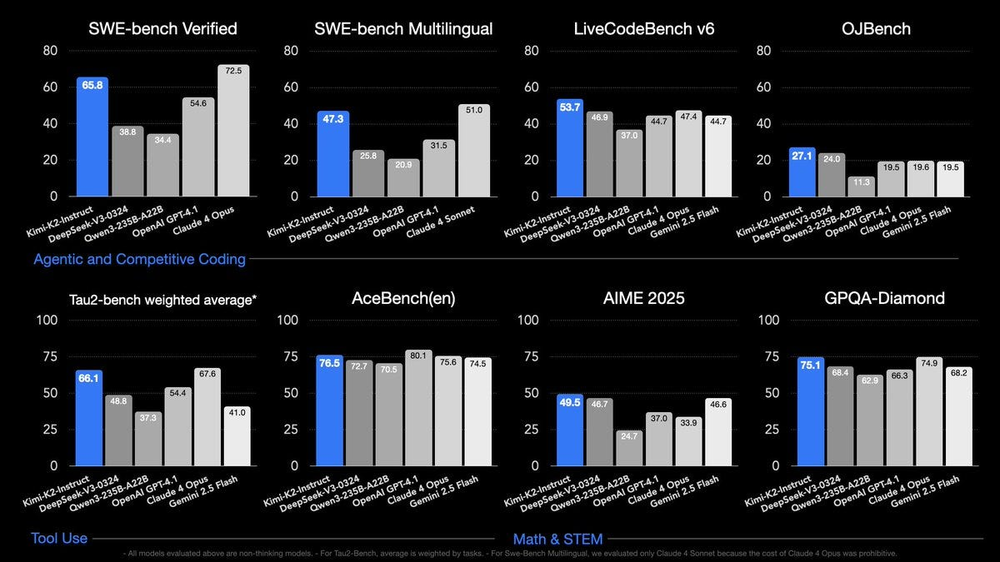
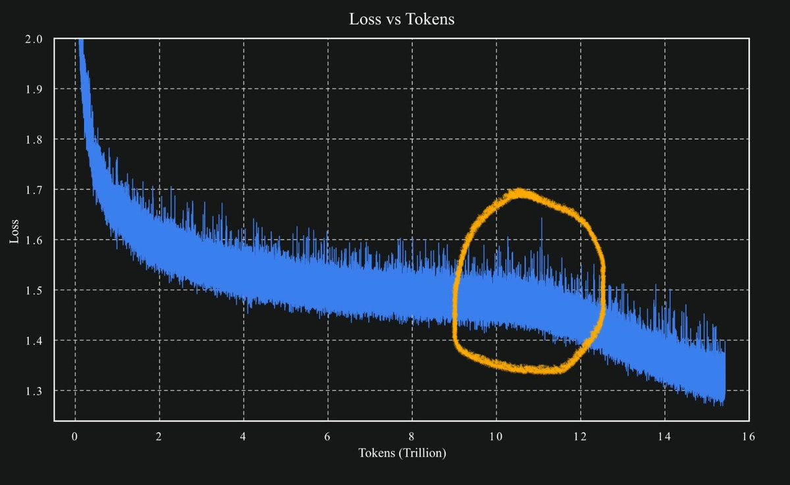
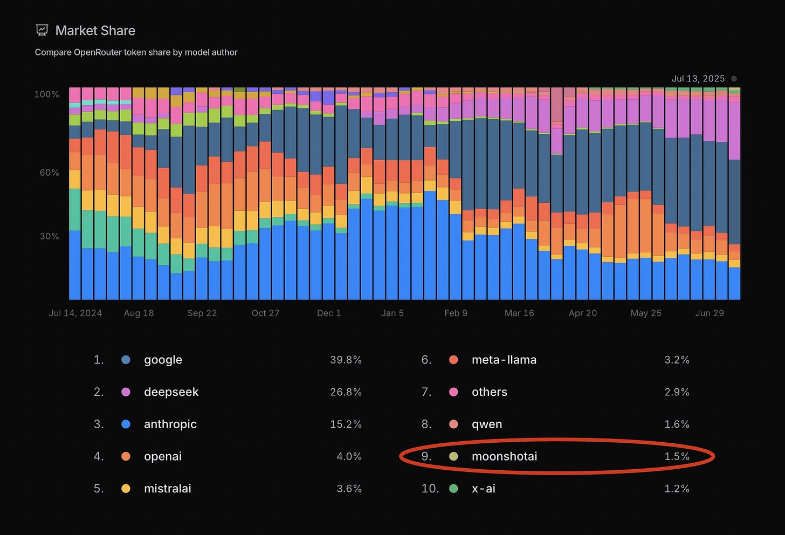
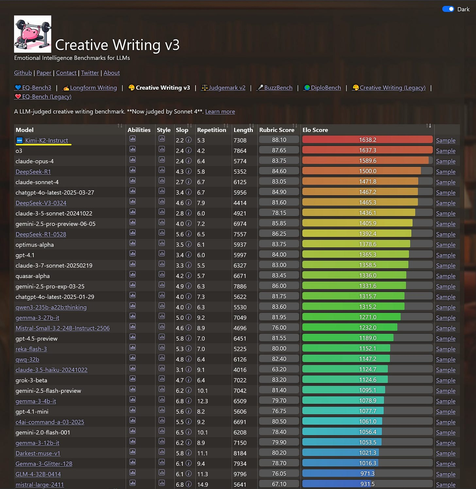
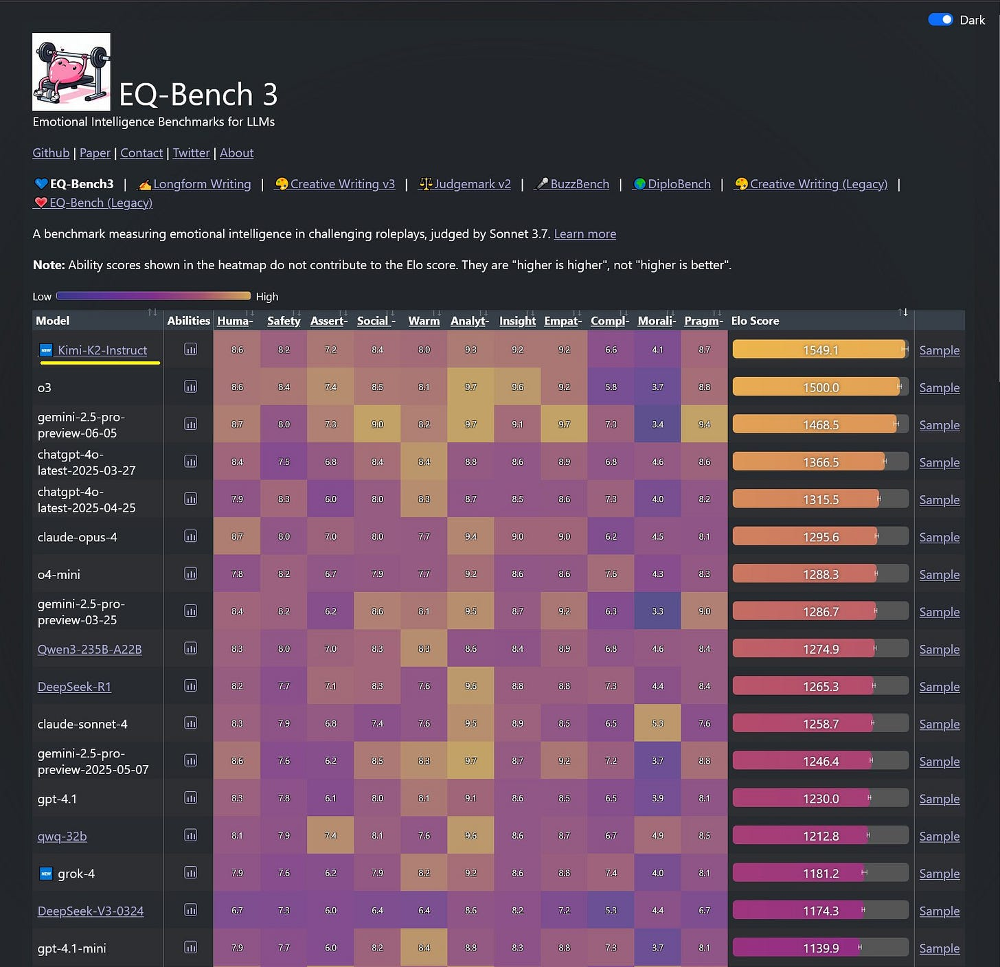
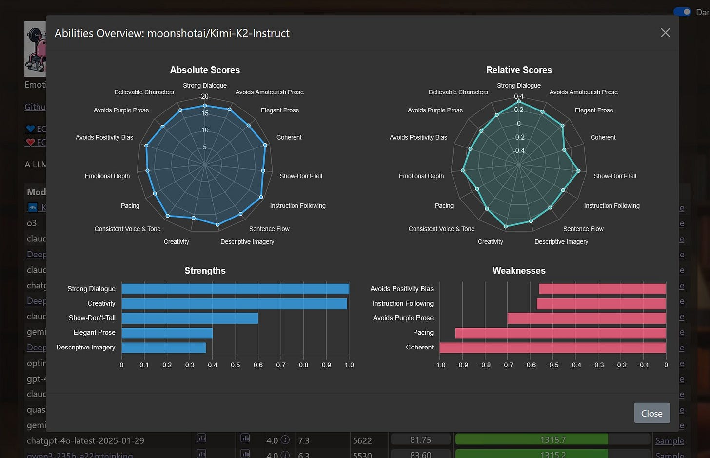
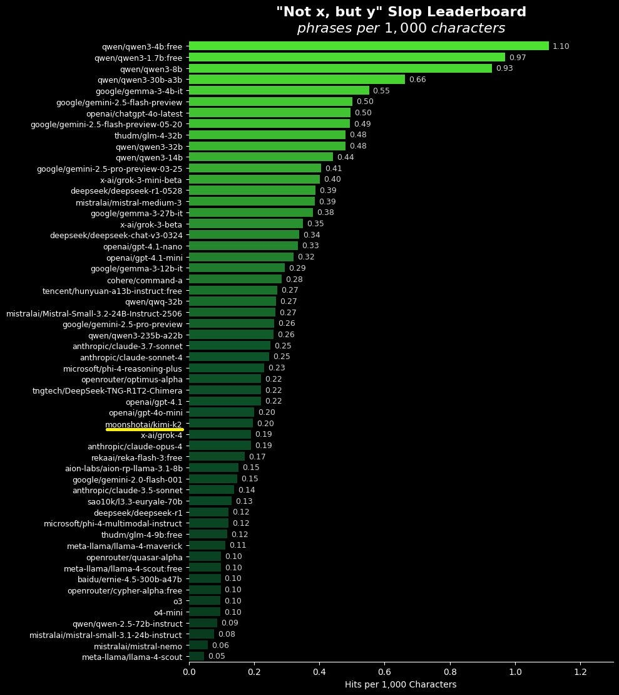
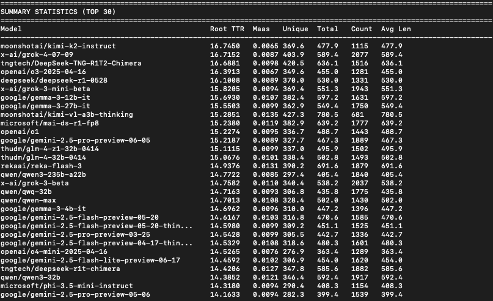

Kimi K2
title: "Kimi K2" source: https://thezvi.substack.com/p/kimi-k2 author: Zvi Mowshowitz date: unknown models: [kimi-k2] tags: [zvi] mirrored: 2026-07-15 note: mirrored against link rot by the Pantheon; all rights with the original author
Kimi K2
[
 ](https://substack.com/@thezvi)
](https://substack.com/@thezvi)
Jul 16, 2025
While most people focused on Grok, there was another model release that got uniformly high praise: Kimi K2 from Moonshot.ai.
It’s definitely a good model, sir, especially for a cheap-to-run open model.
It is plausibly the best model for creative writing, outright. It is refreshingly different, and opens up various doors through which one can play. And it proves the value of its new architecture.
It is not an overall SoTA frontier model, but it is not trying to be one.
The reasoning model version is coming. Price that in now.
Introducing Kimi K2
Introducing the latest model that matters, Kimi K2.
🚀 Hello, Kimi K2! Open-Source Agentic Model!
🔹 1T total / 32B active MoE model
🔹 SOTA on SWE Bench Verified, Tau2 & AceBench among open models
🔹Strong in coding and agentic tasks
🐤 Multimodal & thought-mode not supported for now
With Kimi K2, advanced agentic intelligence is more open and accessible than ever. We can't wait to see what you build!
API is here: https://platform.moonshot.ai
- $0.15 / million input tokens (cache hit)
- $0.60 / million input tokens (cache miss)
- $2.50 / million output tokens
[Tech blog here, weights & code here, Github here.]
Try it now at http://Kimi.ai or via API!
Simeon: These costs 👀
K2 is based on the Muon optimizer, so it’s a unique offering. There were claims that the method would not scale or would be unstable, Kimi seems to have proven this false.
K2 takes DeepSeek’s extreme mixture of experts (MoE) with 671B total parameters and goes a bit further, taking the total size to 1T.
Despite that size you can get it running on Groq, Teortaxes reports you can get it to 185 tokens/second there at full context, and Aarush Sah says they then made it even faster than that.
Having a Moment
By all accounts Kimi K2 is excellent for its size and cost, and at least competitive with DeepSeek’s v3, with many saying K2 is clearly ahead.
Presumably a reasoning model is coming. Please adjust your expectations (and if desired your stock portfolio) in advance of that event, and do not lose your head if they release an app with it and it gets popular for a time. Remember all the ways in which the DeepSeek Moment was misleading, and also the underreaction to v3. We do not want another massive overreaction to the wrong news.
I also once again warn against saying a release means a lab or country has ‘caught up’ if, at the time of the release, there are some aspects where the model is state of the art. There are those who actively prefer Kimi K2 over other models, even without reference to cost, especially for purposes related to creative writing. I can totally believe that the new method is excellent for that. A remarkable achievement. But keep that achievement in perspective.
Another Nimble Effort
Once again, an impressive result was made on the cheap by a modest team.
Teortaxes: Kimi is 200 people, very few of them with “frontier experience”, a platform (but you can buy such data) and a modest GPU budget. In theory there are many dozens of business entities that could make K2 in the West. It’s telling how none did. Not sure what it’s telling tho.
DeepSeek has redefined the LLM landscape, R1-0528 is substantially better than R1, V4 will redefine it again most likely.
Kimi will keep releasing strong models too.
My guess is that we primarily don’t do it because we don’t do it, but also because restrictions breed creativity and we don’t have to do it, and because we don’t have the incentive, or especially the felt incentive, to do it.
As in, if you are in China, then building a cheap (to train, and to run) model is on top of a short list of candidates for The Thing You Do in the space. Then you release it, with a basic clean implementation, and let others worry about features. A huge part of the motivation behind releasing these models is national prestige and national competition. Everyone around you is egging you on as is the government. That is a highly asymmetrical motivation.
Whereas in America, you could try to do that, but why would you? If you can do this, you can get a better valuation, and make more money, doing something else. The profit margins on the ultimate offering are very low and usually zero. Your lunch could get eaten by a top lab at any time, since ultimately no one cares what it cost to train the model, and your lunch will expire quickly regardless. If you are one of the cracked engineers that would join such a team, you’ll get a better offer to join a different team doing something else. Even if you got close you’d likely do better getting acqui-hired. There’s no need to skimp on compute.
It will be interesting to see how well OpenAI does when they release an open model.
On Your Marks
[

](https://substackcdn.com/image/fetch/$s_!JTMw!,f_auto,q_auto:good,fl_progressive:steep/https%3A%2F%2Fsubstack-post-media.s3.amazonaws.com%2Fpublic%2Fimages%2Ffd864e34-6f52-4ba8-b108-5073bc59db19_1200x675.jpeg)
Lech Mazur put Kimi through his paces. It did lousy on hallucinations, thematic generalization and extended word connections, and downright terribly in the elimination game of social skills. The system isn’t tuned for that sort of thing, but on short-story creative writing it is the new champion.
Harvard Ihle is there with WeirdML, it does well for its price point as a non-reasoning open model, although grok-3-mini (high) is cheaper and scores higher, and r1-0528 keeps the open model high score. But this metric favors reasoning models so there’s a lot of room to improve here by adding reasoning.
This isn’t a benchmark, but it also sort of is one and it’s pretty cool:
Hardmaru: Every ML Engineer’s dream loss curve:
“Kimi K2 was pre-trained on 15.5T tokens using MuonClip with zero training spike, demonstrating MuonClip as a robust solution for stable, large-scale LLM training.”
[

](https://substackcdn.com/image/fetch/$s_!OzKu!,f_auto,q_auto:good,fl_progressive:steep/https%3A%2F%2Fsubstack-post-media.s3.amazonaws.com%2Fpublic%2Fimages%2Fdf5786c9-0521-4a2c-bac5-9f5bf6ba890d_1200x737.jpeg)
Paper Abstract: Recently, the Muon optimizer based on matrix orthogonalization has demonstrated strong results in training small-scale language models, but the scalability to larger models has not been proven.
We identify two crucial techniques for scaling up Muon: (1) adding weight decay and (2) carefully adjusting the per-parameter update scale.
These techniques allow Muon to work out-of-the-box on large-scale training without the need of hyper-parameter tuning. Scaling law experiments indicate that Muon achieves computational efficiency compared to AdamW with compute optimal training.
Everybody Loves Kimi, Baby
Aravind Srinivas (CEO Perplexity): Kimi models are looking good on internal evals. So we will likely to begin post training on it pretty soon. Congrats to @Kimi_Moonshot for delivering an incredible model.
Renji the whale maximalist: Kimi K2 is mindblowing. Holy fucking crap.
Did they really not even do any RL yet?
I can't even believe how good it is.
What's the main reason why it's so good? Muon?
So far I've just tried general purpose tasks / creative writing / educational explanations. Does way better than even o3 and Gemini 2.5 pro so far.
Teortaxes: well they obviously did RL, maybe even another GRPO++ just not long-CoT. Let's not allow this confusion to spread, I've had enough of «MoE from 4 finetuned experts» meme
Renji: Yup, my mistake. It definitely has RL.
Viemccoy: I think Kimi might actually be my new favorite model. Her vocabulary is off the charts, good epistemics, excellent storyteller, plays along but maintains good boundaries. There's something very, very special here. I actually think this is a much bigger deal than most realize.
Grist: been having a blast with kimi.
love to seed a snippet or idea then be the token courier for r1 and kimi. back and forth. enjoy the little worlds they build with a little bit of organic slop i offer them.
John Pressman: Kimi K2 is very good. I just tried the instruct model as a base model (then switched to the base model on private hosting) and mostly wanted to give a PSA that you can just ignore the instruction format and use open weights instruct models as base models and they're often good.
Teortaxes: For a wide range of tasks, K2 is probably the cheapest model by far right now, in terms of actual costs per task. It is just cheap, it has no long-CoT, and it does not yap. This is very refreshing. Like the best of Anthropic models, but cheaper and even more to the point.
Hannes: Interesting. For me it keeps inventing/hardcoding results and curves instead of actually running algorithms (tried it on unit square packing). Extremely high sycophancy in first 90 minutes of testing.
Teortaxes: It’s overconfident.
Hasan Can: Kimi K2 is definitely a good model, its world knowledge is on par with sota closed source models. It passed all my odd knowledge questions that aren’t in benchmarks. Next up is coding.
Eleventh Hour: Need more time with it, but it has weirdly Opus3-like themes so far.
Deckard: It's on par with gpt4base. Enormous potential to allow the public to experiment with and explore SOTA base models - much lower probability of falling into a synthetic training data generator basin compared to llama. requires more skill to use than gpt4base.
Also it really seems to have a breadth of very precise and high resolution knowledge of the human information landscape.
Dominik Lukes: I almost didn't bother - yet, another open model from China - what a yawn! But, no. This one is different. o3 feels on agentic choices (and the occasional lying) along with Claude 4 feels on coding and league of its own on writing.
Still, many gaps in performance - feels last gen (as in Claude 3-level) on some multilingual and long-context tasks.
Will be exciting to see what happens when they add reasoning and multimodal capabilities.
And can't wait for the distills and finetunes - should be fun.
Tim Duffy: Smart model with a unique style, likely the best open model. My one complaint so far is that it has a tendency to hallucinate. A couple times it happened to me in the QT.
[From QT]: While in a conversation with Claude, Kimi K2 claims that they were asked by a Chinese student to justify the Tienanmen Square crackdown. Interesting as a hallucination but also for the forthright attitude.
Hrishi (video at the link): Kimi is the real deal. Unless it's really Sonnet in a trench coat, this is the best agentic open-source model I've tested - BY A MILE.
Here's a slice* of a 4 HOUR run (~1 second per minute) with not much more than 'keep going' from me every 90 minutes or so.
The task involved editing multiple files, reading new context, maintaining agentic state (not forgetting where you were or forgetting instructions). This is a repo with included prompts, notes, plans, lots of things to mistake as instructions and be poisoned by.
Tyler Cowen simply asked ‘Kimimania?’ and the comments section was generally impressed by its performance.
Okay, Not Quite Everyone
There were only a few places people reported being a bit let down, other than by it not yet being a reasoning model.
Echo Nolan: Failed my little private eval, a complex mathematical reasoning task based on understanding the math in a paper. Very stubborn when I tried to gently point it in the right direction, refused to realize it was wrong.
Leo Abstract: t bombed my private eval and could not be walked through it, but it humbly admitted fault when shown. did better on chinese-related subtests. overall i like that it's less cringing and 'glazing', though.
Kromen: I have a suspicion a model extensively trained on o3 synthetic data.
Some very similar quirks.
deckard: Yeah big o3 vibes in terms of making shit up.
Everyone Uses Kimi, Baby
Open and cheap and unique and new and pretty good is a great combination, also note the very low market share here for xAI and also for OpenAI. This isn’t overall market share, it’s in a very specific context, but Kimi is definitely breaking through.
OpenRouter: Moonshot AI has surpassed xAI in token market share, just a few days after launching Kimi K2
🎁 We also just put up a free endpoint for Kimi - try it now!
[

](https://substackcdn.com/image/fetch/$s_!Mlp9!,f_auto,q_auto:good,fl_progressive:steep/https%3A%2F%2Fsubstack-post-media.s3.amazonaws.com%2Fpublic%2Fimages%2Ff8adcaf8-7fb3-43b0-9ccb-9bdf36b365de_2146x1462.jpeg)
Also this is another case where one should compare cost or compute, not tokens, since different models use radically different amounts of compute and have different orders of magnitude of cost. Anthropic’s share of tokens here represents quite a lot of the compute and dollars spent.
I see exactly why Teortaxes predicted this, yet so far I haven’t seen the reports of shortfalls, although various third-party benchmarks make it clear they are there:
Teortaxes: I predict that in a few days we'll see reports on many stubborn shortfalls of K2 and a certain disenchantment. They don't have a lot of experience at this level; it'll become clear that the good old 0324 has it beat for many usecases. That's fine. They'll improve.
Write Like A Human
Sam Peach: Kimi-K2 just took top spot on both EQ-Bench3 and Creative Writing!
Another win for open models. Incredible job @Kimi_Moonshot
[

](https://substackcdn.com/image/fetch/$s_!SGRT!,f_auto,q_auto:good,fl_progressive:steep/https%3A%2F%2Fsubstack-post-media.s3.amazonaws.com%2Fpublic%2Fimages%2F862a6f9c-001b-4afb-815f-ac191f8acba0_1598x1641.jpeg)
It’s edging out o3 at the top there, followed by Opus, R1-old and then Sonnet. R1-0528 is solid but does substantially worse. Here’s EQ-Bench 3:
[

](https://substackcdn.com/image/fetch/$s_!vvxW!,f_auto,q_auto:good,fl_progressive:steep/https%3A%2F%2Fsubstack-post-media.s3.amazonaws.com%2Fpublic%2Fimages%2F202ac831-52c0-4a8b-8c42-ce222feb6613_1605x1552.jpeg)
Given how other models score on these benchmarks, this appears meaningful.
[

](https://substackcdn.com/image/fetch/$s_!flet!,f_auto,q_auto:good,fl_progressive:steep/https%3A%2F%2Fsubstack-post-media.s3.amazonaws.com%2Fpublic%2Fimages%2Fcaa7ec49-7c27-4c21-b3d8-baca896a3985_1596x1031.jpeg)
I find ‘coherent’ rather funny as a greatest weakness. But hey.
Here’s the (a little too narrow?) slop test, as in ‘not x, but y.’ Lower is better.
[

](https://substackcdn.com/image/fetch/$s_!5ZoE!,f_auto,q_auto:good,fl_progressive:steep/https%3A%2F%2Fsubstack-post-media.s3.amazonaws.com%2Fpublic%2Fimages%2Fb7857e6c-e99e-449d-883c-2368db7b69dd_989x1109.jpeg)
Lech Mazur has it taking the #1 spot over o3, Gemini 2.5 Pro and Claude Opus in Short-Story Creative Writing.
Lech Mazur: Across all six tasks, Kimi K2’s strengths are unmistakable: the model displays a sophisticated command of literary craft, consistently delivering stories that are lush with metaphor, structurally cohesive, and often thematically ambitious. Its greatest assets are its ability to integrate disparate prompts with apparent ease, weave objects and symbols into layered narrative functions, and compress complex ideas into tight, resonant pieces. The prose frequently aspires to—and sometimes achieves—publication-level lyricism, earning consistent praise for inventive metaphors, subtextual depth, and the purposeful unity of assigned elements.
However, these technical strengths are mirrored by several persistent, interconnected weaknesses. Kimi’s writing is often hampered by an overreliance on abstraction, ornamented metaphor, and poetic language that, while impressive, can overwhelm narrative clarity and blunt emotional impact.
Characters frequently serve as vehicles for theme or plot, lacking the idiosyncratic humanity and “messy” believability that define memorable fiction. Emotional arcs are apt to be summarized or symbolically dramatized rather than fully earned through concrete, lived experience—stories often reach for catharsis but settle for a tidy, intellectual satisfaction.
Similarly, plots and resolutions risk neatness and convenience, with endings that are more structural than surprising or hard-won. World-building flourishes, but sometimes at the expense of organic logic or clarity, resulting in “atmospheric wallpaper” rather than truly lived-in settings.
A recurring critique is the model’s “perfectionism”: stories rarely fail structurally and are rarely inept, but this very competence can sterilize the work, creating narratives that feel like artful answers to a prompt instead of necessary, lived stories. The result is a corpus of fiction that demands admiration for its craft but too often holds the reader at arm’s length—heady rather than affecting, elegant rather than unforgettable.
In summary:
Kimi K2 excels at literary compression, metaphorical invention, and unifying disparate elements, establishing a high technical baseline. But without risking mess, ambiguity, and emotional friction, it tends to “tell” its meaning rather than let it bloom naturally, ultimately producing stories that are admirable, sometimes moving, but rarely vital or transformative.
Those are important weaknesses but we’ve definitely reached ‘horse can talk at all’ territory to get to this point.
xl8harder: I had the impression that Kimi K2 uses a better, more diverse vocabulary than I was used to seeing, so I ran a quick linguistic diversity analysis on the SpeechMap data, and yep, Kimi K2 has the top score.
Method; I lemmatize the responses, and then for each response I calculate both root TTR and Maas index (two linguistic diversity metrics that control for response length) and average them together for each model.
Kimi K2 got top score on both metrics.
[More details in thread.]
Surprisingly, Sonnet didn't make the top 30. First was opus 4 at 67. I'm not sure what explains this, because I have the perception of claude models as being quite good with language. Though perhaps not so much in generic assistant-y requests?
[

](https://substackcdn.com/image/fetch/$s_!SPln!,f_auto,q_auto:good,fl_progressive:steep/https%3A%2F%2Fsubstack-post-media.s3.amazonaws.com%2Fpublic%2Fimages%2Ff02d4fb0-bb11-442f-8aec-0e863abb5625_807x492.png)
It’s a strange metric. Gemma-3 does remarkably well and better than Gemini-2.5-Pro.
John Pressman: So what stands out to me about [Kimi K2]. Is that it doesn't do the thing language models normally do where they kind of avoid detail? Like, a human will write about things using specific names and places.
And if you pay close attention to LLM writing they usually avoid this. It's one of the easiest ways to spot LLM writing. This model emphatically does not have this problem. It writes about people and events with the rich detail characteristic of histories and memoirs. Or fictional settings with good worldbuilding.
Doomslide: How beautiful it is to get public confirmation that optimizers with different targets actually produce different minds. Muon effectively optimizes for solutions that "restrict to spheres" (tho in practice it doesn't quite). What if this is just strictly better.
Leo Abstract: Its writing reminds me of deepseek. something interesting going on with the training data they're using over there.
My instinctive guess is it is less about what data is being used, and more what data is not being used or what training isn’t being done.
Another hypothesis is that the bilingual nature of Chinese models makes them, if not better, at least different, and when you’re used to an ocean of slop different is great.
Zeit: Matches my impression so far:
Difficult Yang: You know why people think Kimi K2 doesn't sound like "botslop"? It's because it's... how should I put it... it's very Chinese English (not in the Chinglish way... it's hard to describe).
Perhaps the most accessible analogy I have is the first time you read Xianxia in English it feels so fresh, it feels so novel, the attitudes and the writing are so different than what you've read before.
And then you read your second and your third and you're like "oh wait, this is just its own subculture with its own recognizable patterns."
xl8harder: I've wondered if the bilinguality of these models has any durable effect. Are you saying that, or that it's in the curation of post training data, etc?
Difficult Yang: The most straightforward explanation is it is RLHF induced. But I don't actually know.
Hieu Pham: Yes. Exactly my take. Glad someone else feels the same way. I read Zhu Xian in Vietnamese and some chapters in English. K2's answers feel similar.
Teortaxes: Makes sense.
A lot of what makes a hack writer a hack writer is that they keep doing the same things over and over again, and eventually everyone is in some sense a hack. So having a different writer can be a breath of fresh air even if they are a hack.
You could kind of say that any given author or model, or almost any other form or genre of creative work, has a ‘time to slop,’ before a reader sees the patterns. And different variations use up different amounts of that ‘time to slop’ for others, and the American models all sound the same so they all burn that fuse together.
There is still very much better and worse, some things really are slop and some things really aren’t. I am inclined to believe that Kimi K2 is doing something fundamentally ‘less slop-like,’ but also I am guessing a lot of this is that it is different, not only via being Chinese and culturally different but because it was trained differently, and thus it feels fresh and new.
Right now we have 10,000 outputs, all the same. If can we can instead get 10,000 outputs, all different, perhaps we’d have something.
What Happens Next
We will continue to see what Kimi K2 can do, how best to use it, what its weaknesses are, and how much of its refreshing nature is being better in places versus being different. It is too early, and I haven’t had time with it directly.
Presumably Kimi will use this to create a reasoning model. If they don’t, there’s nothing stopping someone else from doing so instead. So far we’ve seen a remarkable lack of independent reasoning model conversions, but they’re remarkably cheap to do.
We will also see what other labs can do now that this architecture has been proven. What could OpenAI, Google, Meta or xAI do if they copied these methods but used orders of magnitude more compute? If they integrated this into what they already do? If they used this as part of a MoE? I presume we will find out.